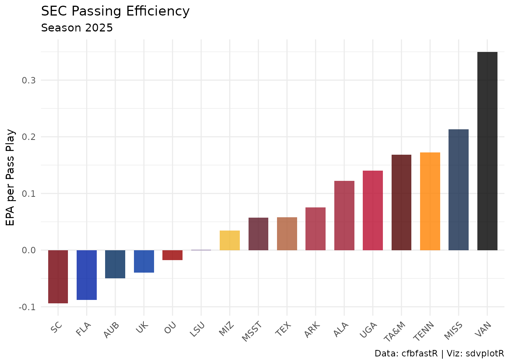
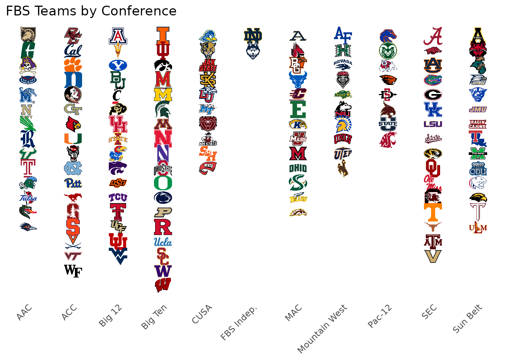
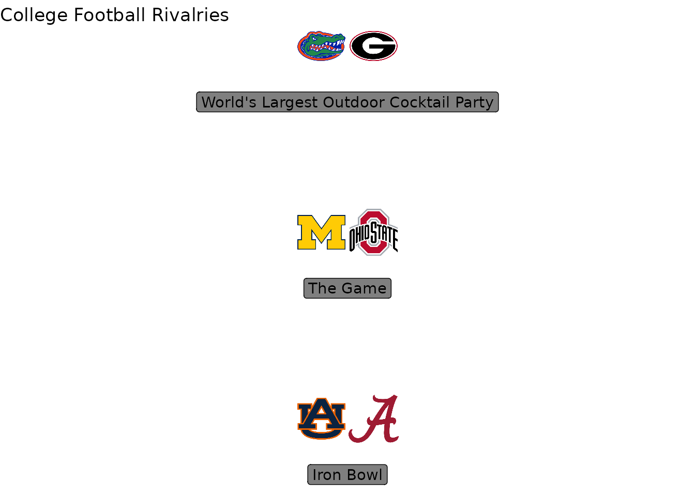

On this page
Introduction
This vignette demonstrates how to create rich CFB (College Football) visualizations by combining cfbfastR for play-by-play data, cfbseedR for conference standings and College Football Playoff seeding, and sdvplotR for team logos, colors, and gt tables.
Loading CFB Data
Use cfbfastR to load a season of play-by-play data:
# The last completed regular season (named for the year it starts; the regular
# season ends in mid-December)
season <- as.integer(format(Sys.Date(), "%Y")) -
(format(Sys.Date(), "%m-%d") < "12-15")
pbp <- cfbfastR::load_cfb_pbp(seasons = season) |>
filter(season_type == "regular") # drop bowl and playoff plays
# Pass plays with an EPA value; clean_team_abbrs() turns the offense's school
# name into sdvplotR's abbreviation
pass_plays <- pbp |>
filter(pass == 1, !is.na(EPA), !is.na(pos_team)) |>
mutate(team_abbr = clean_team_abbrs(pos_team, sport = "cfb"))Conference Standings with Logos
Rank one conference’s passing offenses by EPA per play:
# EPA per pass play for every team, with the conference sdvplotR keeps for it
team_perf <- pass_plays |>
group_by(team_abbr) |>
summarise(
mean_epa = mean(EPA, na.rm = TRUE),
n_plays = n(),
.groups = "drop"
) |>
filter(n_plays >= 100) |>
inner_join(
select(team_reference("cfb"), team_abbr, team_location, conference, division),
by = "team_abbr"
) |>
filter(division == "FBS")
sec_teams <- team_perf |>
filter(conference == "SEC") |>
arrange(desc(mean_epa))
ggplot(sec_teams, aes(x = reorder(team_abbr, mean_epa), y = mean_epa)) +
geom_col(aes(fill = team_abbr), width = 0.7) +
scale_fill_sdv(sport = "cfb", alpha = 0.8) +
labs(
title = "SEC Passing Efficiency",
subtitle = paste("Season", season),
x = NULL,
y = "EPA per Pass Play",
caption = "Data: cfbfastR | Viz: sdvplotR"
) +
theme_minimal() +
theme(
axis.text.x = element_text(angle = 45, hjust = 1),
legend.position = "none"
)
Playoff Bracket with cfbseedR
cfbseedR applies each conference’s tiebreakers and seeds
a 12-team College Football Playoff from a season’s results.
Unlike load_cfb_pbp(),
cfbfastR::load_cfb_schedules() reads the
CollegeFootballData.com API, which needs a free API key. Get one at https://collegefootballdata.com/key and register it for
the session before running this chunk:
Sys.setenv(CFBD_API_KEY = "YOUR-API-KEY-HERE")
# to keep it across sessions, add CFBD_API_KEY=YOUR-API-KEY-HERE to
# ~/.Renviron (usethis::edit_r_environ()); see ?cfbfastR::register_cfbd
sched <- cfbfastR::load_cfb_schedules(season)
# FBS and FCS teams: games against FCS count toward records, but only FBS
# teams are seeded
teams <- bind_rows(
sched |> transmute(team = home_team, conference = home_conference, division = toupper(home_division)),
sched |> transmute(team = away_team, conference = away_conference, division = toupper(away_division))
) |>
distinct(team, .keep_all = TRUE) |>
filter(division %in% c("FBS", "FCS"))
games <- cfbseedR::cfb_games_from_schedule(sched) |>
filter(
game_type != "POST", !is.na(result),
home_team %in% teams$team, away_team %in% teams$team
)
standings <- cfbseedR::cfb_standings(games, teams, verbosity = "NONE")
bracket_data <- standings |>
filter(team %in% teams$team[teams$division == "FBS"]) |>
# the auto-bid rule in force that season
cfbseedR::cfb_playoff_seeds(playoff_seeds = 12, autobid = if (season >= 2026) "2026" else "2025") |>
filter(!is.na(seed)) |>
mutate(team_abbr = clean_team_abbrs(team, sport = "cfb"))
ggplot(bracket_data, aes(x = seed, y = 1)) +
geom_sdv_logos(
aes(team = team_abbr),
sport = "cfb",
width = 0.07
) +
scale_x_continuous(breaks = 1:12) +
labs(
title = "College Football Playoff Seeds",
subtitle = paste("Season", season, "from results alone"),
x = "Seed",
y = NULL
) +
theme_minimal() +
theme(
axis.text.y = element_blank(),
panel.grid.major.y = element_blank(),
panel.grid.minor = element_blank()
)
autobid picks the automatic-bid rule in force that
season. Without committee rankings the field is seeded from results
alone; pass the committee’s final rankings as rankings = to
cfb_playoff_seeds() to seed the bracket the way the
committee did.
CFB Team Tiers
Create a tier plot for top CFB teams:
# The 25 best passing offenses by EPA per play, in tiers
top_25 <- team_perf |>
slice_max(mean_epa, n = 25, with_ties = FALSE) |>
mutate(
tier_no = case_when(
mean_epa > 0.3 ~ 1,
mean_epa > 0.2 ~ 2,
mean_epa > 0.1 ~ 3,
mean_epa > 0.0 ~ 4,
TRUE ~ 5
)
) |>
select(tier_no, team = team_abbr)
sdv_team_tiers(
top_25,
sport = "cfb",
title = "CFB Passing Offense Tiers",
subtitle = paste("EPA per pass play, season", season),
tier_desc = c(
"1" = "Elite",
"2" = "Playoff Contenders",
"3" = "Top 25",
"4" = "Bowl Teams",
"5" = "Rebuilding"
),
presort = TRUE
)
Conference Map
Visualize all FBS teams by conference:
# FBS conferences, from the conferences sdvplotR keeps for every team
conference_map <- team_reference("cfb") |>
filter(division == "FBS") |>
arrange(conference, team_location) |>
group_by(conference) |>
mutate(team_rank = row_number()) |>
ungroup() |>
mutate(conference_num = as.numeric(factor(conference)))
ggplot(conference_map, aes(x = conference_num, y = team_rank)) +
geom_sdv_logos(
aes(team = team_abbr),
sport = "cfb",
width = 0.04
) +
scale_x_continuous(
breaks = seq_along(levels(factor(conference_map$conference))),
labels = levels(factor(conference_map$conference))
) +
scale_y_reverse() +
labs(
title = "FBS Teams by Conference",
x = NULL,
y = NULL
) +
theme_minimal() +
theme(
axis.text.x = element_text(angle = 45, hjust = 1),
axis.text.y = element_blank(),
panel.grid = element_blank()
)
CFB Standings Table with Logos
Create a gt table with team logos:
team_perf |>
slice_max(mean_epa, n = 15, with_ties = FALSE) |>
mutate(rank = row_number(), logo = team_abbr) |>
select(rank, logo, team_location, conference, mean_epa, n_plays) |>
gt() |>
gt_sdv_logos(columns = "logo", sport = "cfb", height = 30) |>
fmt_number(columns = "mean_epa", decimals = 3) |>
fmt_number(columns = "n_plays", decimals = 0) |>
cols_label(
rank = "#",
logo = "",
team_location = "Team",
conference = "Conf",
mean_epa = "EPA/Play",
n_plays = "Plays"
) |>
tab_header(
title = "Top 15 CFB Passing Offenses",
subtitle = paste("Season", season)
)| Top 15 CFB Passing Offenses | |||||
| Season 2025 | |||||
| # | Team | Conf | EPA/Play | Plays | |
|---|---|---|---|---|---|
| 1 |  |
Ohio State | Big Ten | 0.386 | 384 |
| 2 |  |
USC | Big Ten | 0.370 | 396 |
| 3 |  |
Vanderbilt | SEC | 0.350 | 376 |
| 4 |  |
North Texas | AAC | 0.346 | 450 |
| 5 |  |
North Dakota State | Mountain West | 0.324 | 310 |
| 6 |  |
UConn | FBS Indep. | 0.310 | 442 |
| 7 |  |
Cincinnati | Big 12 | 0.285 | 353 |
| 8 |  |
Indiana | Big Ten | 0.280 | 361 |
| 9 |  |
Air Force | Mountain West | 0.266 | 179 |
| 10 |  |
Georgia Tech | ACC | 0.239 | 360 |
| 11 |  |
Temple | AAC | 0.224 | 341 |
| 12 |  |
Miami | ACC | 0.223 | 388 |
| 13 |  |
South Florida | AAC | 0.214 | 383 |
| 14 |  |
Ole Miss | SEC | 0.214 | 419 |
| 15 |  |
Rutgers | Big Ten | 0.213 | 429 |
Rivalry Matchups
Visualize rivalry games with both team logos:
# Define rivalries
rivalries <- data.frame(
team1 = c("ALA", "AUB", "OSU", "MICH", "UGA", "FLA"),
team2 = c("AUB", "ALA", "MICH", "OSU", "FLA", "UGA"),
rivalry = c("Iron Bowl", "Iron Bowl", "The Game", "The Game",
"World's Largest Outdoor Cocktail Party",
"World's Largest Outdoor Cocktail Party")
) |>
distinct(rivalry, .keep_all = TRUE) |>
mutate(row = row_number())
ggplot(rivalries, aes(x = 1, y = row)) +
geom_sdv_logos(
aes(team = team1),
sport = "cfb",
width = 0.075,
hjust = 0
) +
geom_sdv_logos(
aes(team = team2),
sport = "cfb",
width = 0.075,
hjust = 1
) +
geom_label(
aes(label = rivalry),
nudge_y = -0.3,
alpha = 0.5
) +
scale_x_continuous(limits = c(0.5, 1.5)) +
labs(
title = "College Football Rivalries",
x = NULL,
y = NULL
) +
theme_void()
Axis Labels with Logos
Replace axis labels with team logos:
top_10 <- team_perf |>
slice_max(mean_epa, n = 10, with_ties = FALSE) |>
mutate(team_abbr = factor(team_abbr, levels = team_abbr))
ggplot(top_10, aes(x = team_abbr, y = mean_epa)) +
geom_col(aes(fill = team_abbr), width = 0.6) +
scale_fill_sdv(sport = "cfb", alpha = 0.7) +
scale_x_sdv(sport = "cfb") +
theme_minimal() +
theme_x_sdv() +
labs(
title = "Top 10 CFB Teams by Pass EPA",
x = NULL,
y = "Mean EPA per Play"
) +
theme(legend.position = "none")
Next Steps
- Explore cfbfastR documentation
- Try cfbseedR for tournament simulations
- Combine with oddsapiR for betting lines